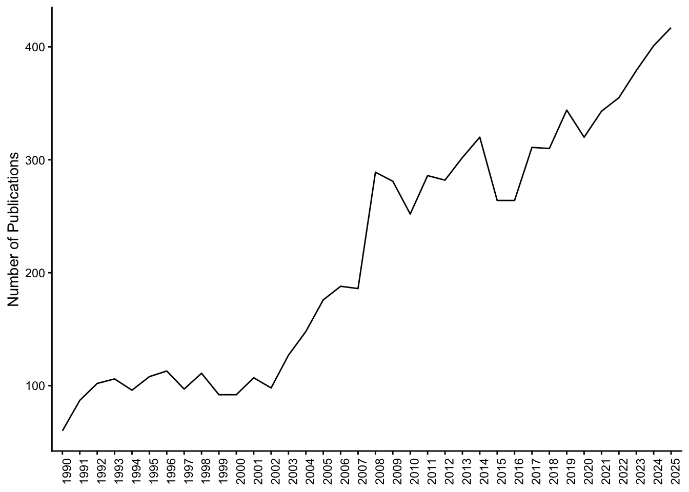

| Subject/Discipline | Top Publication Venue | Publications |
|---|---|---|
| Astronomy & Astrophysics | Astrophysical Journal | 262 |
| Physics | Physical Review C | 96 |
| Geology | Canadian Journal Of Earth Sciences | 80 |
| Chemistry | Canadian Journal Of Chemistry | 43 |
| Psychology | Canadian Psychology-Psychologie Canadienne | 35 |
| Development Studies | Canadian Journal Of Development Studies-Revue Canadienne D Etudes Du Developpement | 29 |
| Literature | Antigonish Review | 26 |
| Business & Economics | Canadian Journal Of Administrative Sciences-Revue Canadienne Des Sciences De L Administration | 25 |
| Religion | Studies In Religion-Sciences Religieuses | 23 |
| History | Canadian Historical Review | 22 |
| Public, Environmental & Occupational Health | Journal Of Occupational Health Psychology | 15 |
| Anthropology | Journal Of Peasant Studies | 14 |
| Geography | Canadian Geographer-Geographe Canadien | 14 |
| Women’s Studies | Equality Diversity And Inclusion | 13 |
| Computer Science | Theoretical Computer Science | 11 |
| Mathematics | Discrete Applied Mathematics | 11 |
| Archaeology | Journal Of Archaeological Science | 10 |
| Asian Studies | Zen Conquests: Buddhist Transformations In Contemporary Vietnam | 9 |
| Philosophy | Zen Conquests: Buddhist Transformations In Contemporary Vietnam | 9 |
| Sociology | Canadian Journal Of Sociology-Cahiers Canadiens De Sociologie | 9 |
| Linguistics | Canadian Modern Language Review-Revue Canadienne Des Langues Vivantes | 6 |
| Criminology & Penology | Big Crime And Big Policing: All About Big Money? | 5 |
| Classics | Mouseion-Journal Of The Classical Association Of Canada | 3 |
Profile of the SMU-affiliated research corpus
Disciplinary Distribution
To describe the disciplinary profile of SMU-affiliated research, I matched the Web of Science subject categories in the corpus to fields represented by SMU’s academic units. When a publication was assigned to more than one category, I counted it in each applicable category. For each matched category, I counted the total number of SMU-affiliated publications, identified the venue in which they appeared most often, and reported how many appeared in that venue. This shows how the research represented in the corpus aligns with the disciplines at SMU. Although the matches presented in Table 1 are based on publication subject categories, they provide a reasonable approximation of units at Saint Mary’s University.
The SMU-affiliated corpus contains 148 of the 254 subject categories used by Web of Science (WoS). identifies the leading venue in each category and its publication count. Table 2 gives the number of venues and publications by category.
I put this Table 2 together to give a sense of how many SMU-affiliated publications appeared in the most common venue for each field represented at SMU. The largest counts are in astronomy and physics, with 262 publications in The Astrophysical Journal and 96 in Physical Review C. I also notice how often journals with a Canadian identity lead their fields. In 10 of the 23 categories, the leading journal has “Canadian” in its title or names a Canadian scholarly association. The Canadian Journal of Earth Sciences leads in geology with 80 publications, the Canadian Journal of Chemistry leads in chemistry with 43, and the Canadian Historical Review leads in history with 22.
| Subject/Discipline | Unique Publication Venues | Publication Count |
|---|---|---|
| Business & Economics | 369 | 924 |
| Computer Science | 266 | 377 |
| Psychology | 219 | 585 |
| Chemistry | 146 | 593 |
| Mathematics | 118 | 233 |
| Geology | 109 | 450 |
| Physics | 101 | 434 |
| Astronomy & Astrophysics | 96 | 1033 |
| History | 94 | 246 |
| Literature | 91 | 185 |
| Sociology | 68 | 117 |
| Public, Environmental & Occupational Health | 59 | 122 |
| Linguistics | 45 | 67 |
| Religion | 45 | 94 |
| Women’s Studies | 42 | 95 |
| Criminology & Penology | 37 | 64 |
| Philosophy | 35 | 54 |
| Anthropology | 29 | 65 |
| Development Studies | 29 | 109 |
| Geography | 29 | 64 |
| Archaeology | 15 | 40 |
| Asian Studies | 9 | 18 |
| Classics | 3 | 5 |
Research Productivity
Annual publication growth was 5.7%, and the average document age was 13.5 years (?@tbl-main-information). The most recent 15 years account for 63% of publications. Figure 1 shows the growth in annual publicaiton counts.

The growth evident in Figure 1 amounts to a 6% compound annual growth rate. At this level, and using a constant-rate calculation, the count of publications at SMU doubles in about 12 to 13 years, which resonates with the average document age of 14 years. For historical context, Bornmann and Mutz (2015) reports an annual growth rate of about 3% for a different corpus and period.
Research Impact
Average Citations per Publication
Publications averaged 23.9 citations, with a median of 8 and a maximum of 1771 (Table 3). The mean exceeds the median because the distribution has a tail of highly cited papers (Aria et al., n.d.). The interquartile range describes the spread of the middle half, and the table reports the number and share of uncited publications.
| Mean | Median | Maximum | IQR | Uncited (count) | Uncited (%) |
|---|---|---|---|---|---|
| 23.9 | 8 | 1771 | 22 | 1611 | 20.6 |
Average Citations per Year per Publication
By accounting for the age of each publication in the corpus, we can take into account the citaiton bias older publications receive. The mean value is 2 citations per year and the median is 0.7.
| Mean | Median | Maximum | IQR | Uncited (count) | Uncited (%) |
|---|---|---|---|---|---|
| 2 | 0.7 | 227 | 1.9 | 1611 | 20.6 |
Publications ranked by Average Citations per Year per Publication
As measures of influence available in this corpus and with the methods employed here, Table 3 and Table 6 lists the 15 citations with the highest citation count and annual mean citation rates at SMU.
| Local Author(s) | Total Authors | Title | Year | Citations |
|---|---|---|---|---|
| WILKES JS;ZAWOROTKO MJ | 2 | AIR AND WATER STABLE 1-ETHYL-3-METHYLIMIDAZOLIUM BASED IONIC LIQUIDS | 1992 | 1771 |
| SHARMA S;VREDENBURG H | 2 | PROACTIVE CORPORATE ENVIRONMENTAL STRATEGY AND THE DEVELOPMENT OF COMPETITIVELY VALUABLE ORGANIZATIONAL CAPABILITIES | 1998 | 1680 |
| KING S et al. | 7 | THE EPIDEMIOLOGY OF CHRONIC PAIN IN CHILDREN AND ADOLESCENTS REVISITED: A SYSTEMATIC REVIEW | 2011 | 1318 |
| SHARMA S | 1 | MANAGERIAL INTERPRETATIONS AND ORGANIZATIONAL CONTEXT AS PREDICTORS OF CORPORATE CHOICE OF ENVIRONMENTAL STRATEGY | 2000 | 1297 |
| ARMITAGE DR et al. | 13 | ADAPTIVE CO-MANAGEMENT FOR SOCIAL-ECOLOGICAL COMPLEXITY | 2009 | 1041 |
| CHRISTENSENDALSGAARD J et al. | 33 | THE CURRENT STATE OF SOLAR MODELING | 1996 | 1032 |
| CONRAD CC;HILCHEY KG | 2 | A REVIEW OF CITIZEN SCIENCE AND COMMUNITY-BASED ENVIRONMENTAL MONITORING: ISSUES AND OPPORTUNITIES | 2011 | 957 |
| CAMERON JE | 1 | A THREE-FACTOR MODEL OF SOCIAL IDENTITY | 2004 | 938 |
| OBERNDORFER E et al. | 10 | GREEN ROOFS AS URBAN ECOSYSTEMS:: ECOLOGICAL STRUCTURES, FUNCTIONS, AND SERVICES | 2007 | 935 |
| AIHARA H et al. | 144 | THE HYPER SUPRIME-CAM SSP SURVEY: OVERVIEW AND SURVEY DESIGN | 2018 | 899 |
| HENNIGAR TL et al. | 5 | SUPRAMOLECULAR ISOMERISM IN COORDINATION POLYMERS: CONFORMATIONAL FREEDOM OF LIGANDS IN CO(NO3)(2)(1,2-BIS(4-PYRIDYL)ETHANE)(1.5) | 1997 | 828 |
| LAVOIE RA et al. | 5 | BIOMAGNIFICATION OF MERCURY IN AQUATIC FOOD WEBS: A WORLDWIDE META-ANALYSIS | 2013 | 826 |
| ZAWOROTKO MJ | 1 | CRYSTAL ENGINEERING OF DIAMONDOID NETWORKS | 1994 | 822 |
| CLEARY S | 1 | THE RELATIONSHIP BETWEEN FIRM INVESTMENT AND FINANCIAL STATUS | 1999 | 763 |
| SUBRAMANIAN S;ZAWOROTKO MJ | 2 | POROUS SOLIDS BY DESIGN - ZN(4,4’-BPY)(2)(SIF6)CENTER-DOT-XDMF, A SINGLE FRAMEWORK OCTAHEDRAL COORDINATION POLYMER WITH LARGE SQUARE CHANNELS | 1995 | 717 |
| Local Author(s) | Total Authors | Title | Year | Annual Mean |
|---|---|---|---|---|
| MELLIER Y et al. | 1137 | EUCLID I. OVERVIEW OF THE EUCLID MISSION | 2025 | 227.00 |
| AIHARA H et al. | 144 | THE HYPER SUPRIME-CAM SSP SURVEY: OVERVIEW AND SURVEY DESIGN | 2018 | 99.89 |
| WEAVER JR et al. | 58 | COSMOS2020: A PANCHROMATIC VIEW OF THE UNIVERSE TO Z ∼ 10 FROM TWO COMPLEMENTARY CATALOGS | 2022 | 91.40 |
| KING S et al. | 7 | THE EPIDEMIOLOGY OF CHRONIC PAIN IN CHILDREN AND ADOLESCENTS REVISITED: A SYSTEMATIC REVIEW | 2011 | 82.38 |
| QADERI MM;MARTEL AB;STRUGNELL CA | 3 | ENVIRONMENTAL FACTORS REGULATE PLANT SECONDARY METABOLITES | 2023 | 66.75 |
| BJORKMAN AD et al. | 129 | PLANT FUNCTIONAL TRAIT CHANGE ACROSS A WARMING TUNDRA BIOME | 2018 | 66.00 |
| FINKELSTEIN SL et al. | 121 | A LONG TIME AGO IN A GALAXY FAR, FAR AWAY: A CANDIDATE Z ∼ 12 GALAXY IN EARLY JWST CEERS IMAGING | 2022 | 60.80 |
| CONRAD CC;HILCHEY KG | 2 | A REVIEW OF CITIZEN SCIENCE AND COMMUNITY-BASED ENVIRONMENTAL MONITORING: ISSUES AND OPPORTUNITIES | 2011 | 59.81 |
| LAVOIE RA et al. | 5 | BIOMAGNIFICATION OF MERCURY IN AQUATIC FOOD WEBS: A WORLDWIDE META-ANALYSIS | 2013 | 59.00 |
| SHARMA S;VREDENBURG H | 2 | PROACTIVE CORPORATE ENVIRONMENTAL STRATEGY AND THE DEVELOPMENT OF COMPETITIVELY VALUABLE ORGANIZATIONAL CAPABILITIES | 1998 | 57.93 |
| ARMITAGE DR et al. | 13 | ADAPTIVE CO-MANAGEMENT FOR SOCIAL-ECOLOGICAL COMPLEXITY | 2009 | 57.83 |
| WILKES JS;ZAWOROTKO MJ | 2 | AIR AND WATER STABLE 1-ETHYL-3-METHYLIMIDAZOLIUM BASED IONIC LIQUIDS | 1992 | 50.60 |
| SHARMA S | 1 | MANAGERIAL INTERPRETATIONS AND ORGANIZATIONAL CONTEXT AS PREDICTORS OF CORPORATE CHOICE OF ENVIRONMENTAL STRATEGY | 2000 | 48.04 |
| OBERNDORFER E et al. | 10 | GREEN ROOFS AS URBAN ECOSYSTEMS:: ECOLOGICAL STRUCTURES, FUNCTIONS, AND SERVICES | 2007 | 46.75 |
| PHILLIPS HRP et al. | 141 | GLOBAL DISTRIBUTION OF EARTHWORM DIVERSITY | 2019 | 45.12 |
I read the two rankings as showing different ways SMU-affiliated research has been cited. The total-citation list includes several papers from the 1990s that have accumulated more than 1,000 citations, led by Wilkes and Zaworotko’s 1992 paper on ionic liquids with 1,771. The annual ranking brings astronomy collaborations to the top. The 2025 Euclid mission overview leads at 227 citations per year, followed by the Hyper Suprime-Cam survey and the COSMOS2020 catalogues.
Nine publications appear in both top-15 lists, spanning topics such as chronic pain in children and adolescents, corporate environmental strategy, and mercury in aquatic food webs. The two lists also show the range of collaboration behind this work. Sharma’s single-author study of corporate environmental strategy appears in both rankings, while the Euclid overview, with 1,137 authors, leads the annual ranking.
On the basis of citation counts, research at SMU has occupiked the attention of those working in the areas of astronomy and astrophysics, chemistry, child and adolescent health, plant science, ecology, ecotoxicology, and business and management. Astronomy accounts for the three highest annual citation rates, while chemistry leads in total citations through the 1992 paper on ionic liquids. Environmental research runs across several of these fields, from studies of tundra vegetation and mercury in aquatic food webs to work on community-based monitoring and corporate environmental strategy.
Scholarly Activity
Absolute frequency and fractionalized frequency (Table 8) provide two measures of scholarly productivity. While absolute frequency gives an author one count for each publication on which they appear, fractionalized frequency allocates each author \(1/N\) of a paper with \(N\) authors. For an author with one sole-authored paper, one two-author paper, and one five-author paper, the absolute count is three and the fractional count is \(1 + 0.5 + 0.2 = 1.7\). The fractional shares for each publication sum to one across its authors.
| Author | Absolute Frequency | Fractionalized Frequency | Academic Department |
|---|---|---|---|
| DOSTAL J | 212 | 68 | Geology |
| PE-PIPER G | 160 | 56 | Geology |
| SUN GL | 144 | 32 | Biology |
| PIPER DJW | 125 | 38 | Geology |
| KELLOWAY EK | 115 | 45 | Psychology |
| ZAWOROTKO MJ | 115 | 36 | Chemistry |
| LINGRAS P | 113 | 47 | Mathmatics |
| MILLS AJ | 111 | 46 | Management |
| MASUDA JD | 97 | 26 | Management |
| MERABET A | 95 | 28 | Engineering |
| VELTMEYER H | 90 | 53 | International Development |
| TURNER DG | 78 | 34 | Astronomy & Physics |
| PYE CC | 73 | 28 | Chemistry |
| STANIVUKOVIC G | 72 | 69 | English |
| CHARLES A | 72 | 29 | Environmental Sciences |
| OWEN JV | 71 | 35 | Geology |
| WANG H | 69 | 27 | Finance, Information Systems and Management Sciences |
| PETRAS J | 63 | 29 | International Development |
| DILMAGHANI M | 61 | 54 | Economimcs |
| KONSTANTINIDIS S | 60 | 27 | Mathmatics |
I read the two columns in light of how research is organized across disciplines. In the humanities, fields such as English and history often centre on work by individual scholars, including single-authored articles and monographs. In parts of the social sciences, including economics and international development, single-author and two-author work is also common. Biology and chemistry often organize research around laboratories, where several researchers contribute to an experiment or a series of studies. Geology can likewise involve field and laboratory teams. In astronomy, surveys and missions can bring together hundreds of researchers across institutions.These practices show up differently in the two columns. Absolute frequency counts a publication once for each author, while fractionalized frequency divides one publication count equally among its authors. Dostal in Geology leads the table by absolute frequency with 212 publications and has a fractionalized count of 68. Stanivukovic in English has 72 publications and a fractionalized count of 69, a pattern consistent with publishing mainly as a sole author. Dilmaghani in Economics also retains much of the absolute count, moving from 61 to 54, while Sun in Biology moves from 144 to 32. I use the two columns together to see how often each scholar publishes and how the size of their author teams changes the ranking.
Document Types
Table 9 groups related WoS labels. Standard Article and Review Article include their early-access variants. Proceedings and meeting abstracts are grouped together, as are standard and early-access book reviews. The Monograph Chapter category includes the chapter, editorial, and review items assigned to it in the source classification.
| Publication Type | Count |
|---|---|
| Standard Article | 5649 |
| Conference Proceeding/Meeting Abstract | 572 |
| Book Review | 529 |
| Monograph Chapter | 405 |
| Editorial Material | 186 |
| Proceedings Article | 166 |
| Other | 87 |
| Correction/Retraction/Addition | 34 |
| Creative Material | 26 |
| Data Article | 9 |
| Film Review | 5 |
| Bibliographic Document | 1 |
Standard articles account for 5,649 of the 7,674 records in the document-type summary, or about 74%. Proceedings and meeting abstracts account for another 738 records. Book reviews (529) and monograph chapters (405) together account for about 12%. Editorial material, corrections, retractions, creative work, and other formats make up the remainder.
Section Summary
The SMU-affiliated research corpus spans 148 Web of Science subject categories. Astronomy and astrophysics has the most publications among the fields matched to SMU academic units, while business and economics has the widest range of publication venues. Canadian journals are the most common venues in several fields, including geology, chemistry, and history. Annual publication output grew by 5.7%, and 63% of publications appeared in the most recent 15 years. The median publication received eight citations. A chemistry paper on ionic liquids leads in total citations, while astronomy collaborations occupy the top three places by average annual citations. International co-authorship accounts for 41.2% of the corpus, and 22% of publications have a sole author. This range of authorship practices helps explain why rankings by publication count shift when each publication is divided among its authors. Standard articles make up about three-quarters of the records in the document-type summary, with conference contributions, book reviews, and monograph chapters among the other forms of scholarship represented.
I read the Web of Science corpus as showing two concentrations of publication activity at SMU. One is in the physical and earth sciences. Astronomy and astrophysics leads the matched subject categories with 1,033 publications, and chemistry (593), geology (450), and physics (434) each contribute substantial bodies of work. The other is in business and economics, which approaches astronomy in publication volume (924) and spans the widest range of venues (369). Psychology, with 585 publications, is another centre of activity, close to chemistry in volume. The citation rankings add a different dimension to this profile. Astronomy collaborations occupy the first three positions by average annual citations, while a chemistry paper leads in total citations and work on corporate environmental strategy appears in both rankings.
I interpret these patterns in light of what Web of Science indexes. The publication counts depend on which journals, books, and conference proceedings the database covers, and the citation counts depend on which citations it captures. This point is relevant because fields communicate their research through different outlets. A field that publishes principally in indexed journals may be more visible in this profile than one in which monographs, book chapters, or locally oriented venues play a larger role. I therefore take these concentrations as an account of where SMU’s research is most visible in Web of Science, with the same coverage in mind when interpreting which work has drawn the most citations.
References
Aria, Massimo, Luca D’Aniello, Michelangelo Misuraca, and Maria Spano. n.d. “Rethinking Thematic Evolution in Science Mapping: An Integrated Framework for Longitudinal Analysis.” https://doi.org/10.48550/arXiv.2603.06436.
Bornmann, Lutz, and Rüdiger Mutz. 2015. “Growth Rates of Modern Science: A Bibliometric Analysis Based on the Number of Publications and Cited References.” Journal of the Association for Information Science and Technology 66 (11): 2215–22. https://onlinelibrary.wiley.com/doi/abs/10.1002/asi.23329.